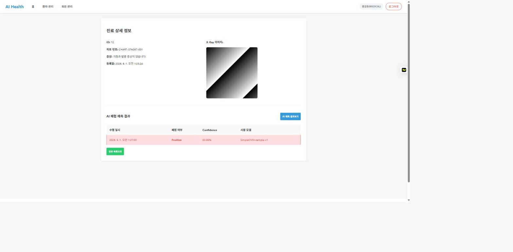

팀 협업 체계가 계획대로 운영되지 않았던 프로젝트에서, 도메인 지식과 아키텍처 설계로 실질적인 진행을 이끌어낸 기록. 진행 과정의 한계까지 포함해 정리함.
프론트엔드 구현이 완료되어 있고 백엔드 기능정의서와 일자별 진행 방식까지 부트캠프가 제공한 상태에서 시작된 과제였음. 설계를 새로 만드는 과제라기보다, 정답에 가까운 요건이 주어진 상태에서 AI 도구를 얼마나 적극적으로 활용해 완성하느냐에 가까운 성격이었음.
6인 팀으로 시작했으나 개인 사정으로 2인이 초반에 이탈함. 역할을 나누자고 제안했으나 다수결에 따라 각자 전 영역을 구현하는 방식으로 결정됨. 이 방식에 따라 2주 동안 매일 교육 마감 시간에 모여 그날의 구현 중 가장 완성도 높은 것을 선택해 병합했고, 같은 기능을 여러 명이 중복 구현하는 비효율과 병합할 때마다 발생하는 불일치가 반복됨. 결과물에 대한 발표·평가 절차가 없어 명확한 기준 없이 종료된 측면이 있었음.
구현 자체를 AI 도구에 크게 의존한 과제였음. 아래는 코드를 직접 작성했다는 의미가 아니라, 도메인 설명과 사용성 리뷰·협업 방식 제안·매일의 병합 점검과 반영을 맡았다는 의미임.
팀원 대부분이 병원 백오피스 프로그램(EMR/PACS 등)을 사용해 본 경험이 없는 상황에서, 실제 현업에서 쓰는 화면을 공유해 백오피스 관리 프로그램이 무엇이고 어떤 화면·데이터 흐름이 필요한지 설명함. 이어서 사용자 입장에서의 사용성을 검토한 리뷰 문서를 직접 작성해 팀에 공유하고 리뷰를 진행함.
매일 각자의 구현을 병합했기 때문에 병합할 때마다 팀원 간 구현 차이로 불일치가 발생할 수밖에 없는 구조였음. 매일 작업 시작 전 전날 결과물을 AI 도구로 점검했고, 도구가 먼저 오류와 수정 방향을 제시하면 이를 확인해 반영하는 방식으로 정합성을 유지함. 이 과정에서 드러난 문제는 부서·성별 enum 값 불일치, 권한 값 대소문자 불일치, 마이그레이션 미적용으로 인한 500 에러, 응답 스키마 필드 누락 등이었음.
중복 구현을 줄이기 위해 역할 분담을 제안했으나 다수결로 채택되지 않음. 이후 매일 정해진 시간까지 GitHub PR을 등록하고 상호 리뷰하는 방식을 제안했으나 실제 운영으로는 정착되지 않음.

역할 분담과 일일 PR·리뷰를 제안했으나 다수결에서 채택되지 않았고, 채택된 이후에도 운영으로 정착시키지 못함. 제안이 받아들여지지 않았을 때 근거를 들어 설득하고 실행까지 끌고 가는 과정이 더 필요했다는 점을 확인함.
— 역할 분담 제안이 받아들여지지 않은 경험결과물에 대한 발표·평가 절차가 없을 경우, 협업의 동기와 마무리의 완성도가 함께 약해질 수 있다는 것을 확인함.
— 발표·평가 없이 마무리된 과정본인 의견을 더 적극적으로 반영해 팀을 설득했다면 더 나은 결과물이 나왔을 수 있다는 아쉬움이 남는 프로젝트였음.
— 프로젝트를 마친 뒤의 소감협업 체계가 계획대로 운영되지 않은 프로젝트였으나, 도메인 지식에 기반한 방향 제시와 프론트-백엔드 통합 검증을 통해 프로젝트를 완성으로 이끄는 데 기여함.
프로젝트를 마치며